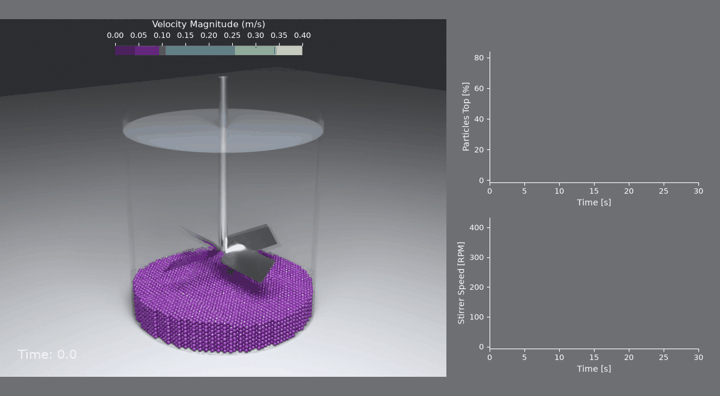
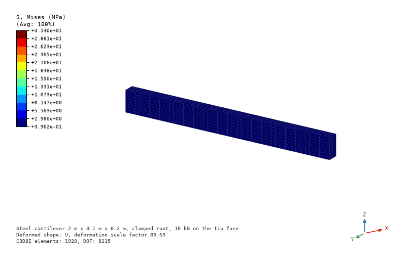
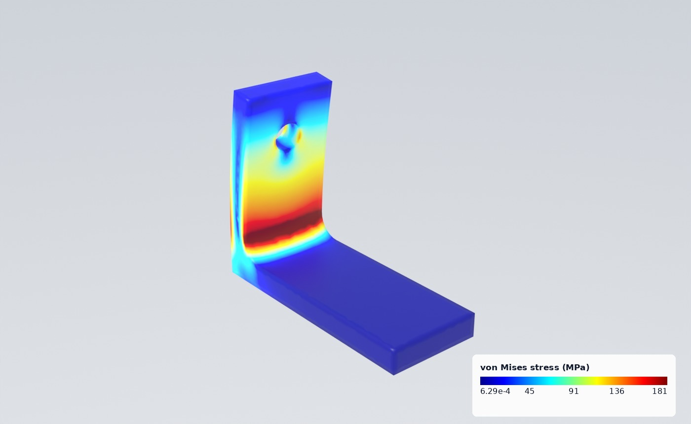
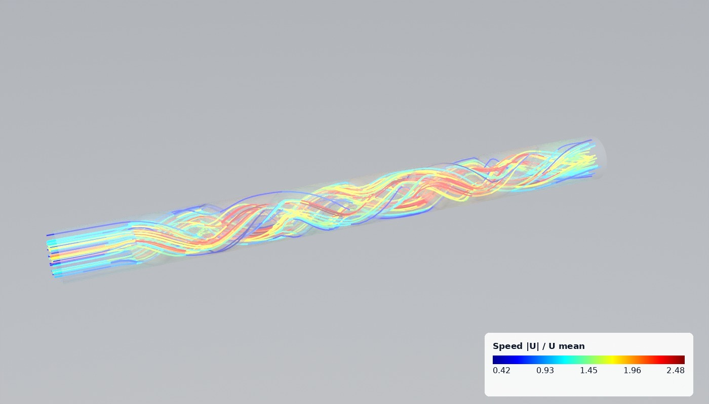
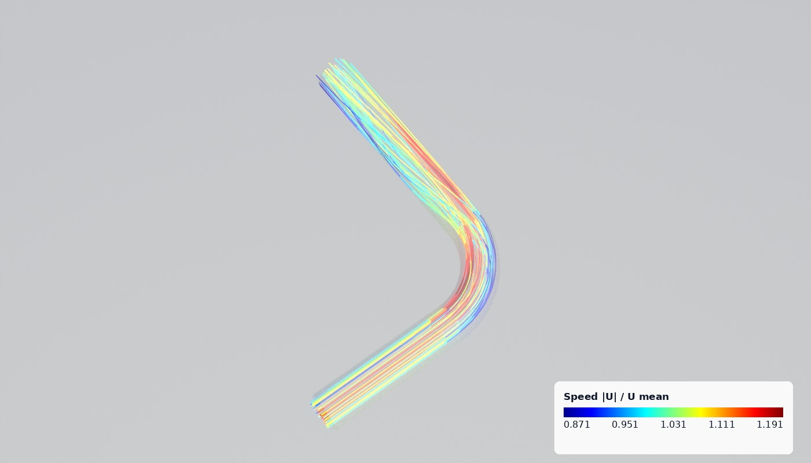
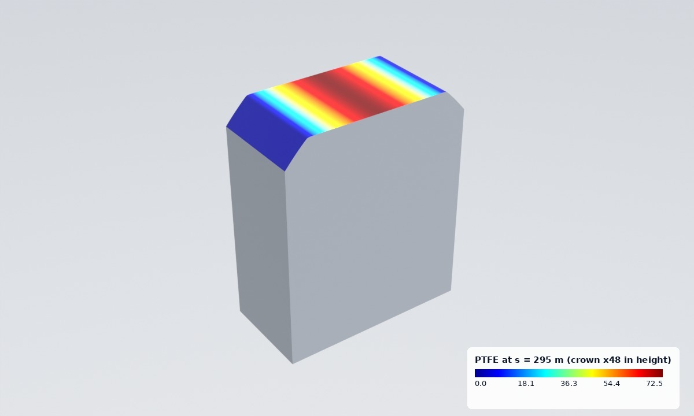
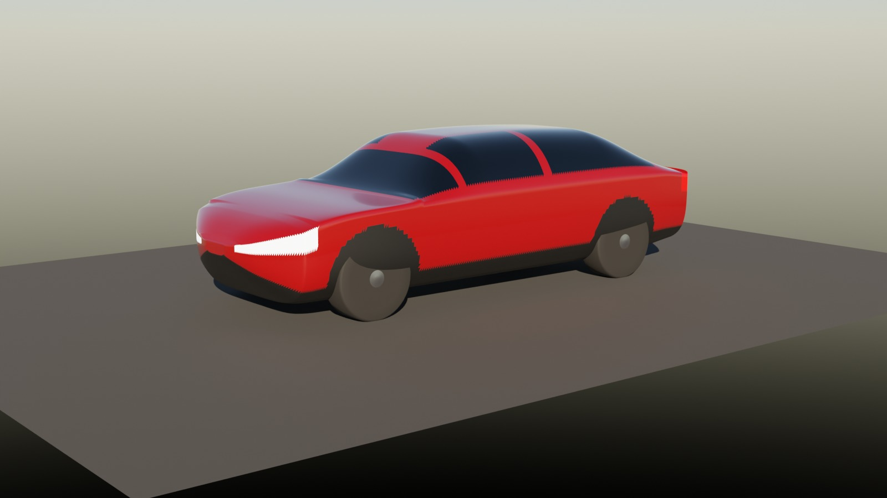

Open-source scientific machine learning
Physics AI that tells you when to trust it.
We build PINNeAPPle, a Python library to simulate, learn, forecast and design physical systems, where every result comes with its evidence: the reference it was checked against, the baseline it had to beat, the physical laws it respects, its uncertainty and its limits.

What PINNeAPPle does
One library from the solver to the decision
Solvers you can check
OpenFOAM around bodies and through pipes and mixers, CalculiX from Python, lattice Boltzmann, DEM particles and a 3-D finite-element solver, each verified on a case with a known answer.
Models against baselines
PINNs, FNO, DeepONet, MeshGraphNet, equivariant GNNs and reduced-order models (POD, DMD, Operator Inference, POD-GPR), always trained next to the simple model they must beat.
Evidence, not claims
Checks against references, physical laws and unseen cases, calibrated uncertainty, grid convergence indices and a curation tier for every experiment.
Results people read
Blender renders, post-processor style FEA figures, process videos with live charts, a 3-D browser viewer and glTF / USD exports, made from the same data the checks ran on.
The trust card
Six questions every result has to answer
A surrogate that is fast but wrong is worse than no surrogate. So each experiment in PINNeAPPle answers the same six questions, and each answer is a check that ran, not a sentence someone wrote.
A stage is answered when its checks pass, partial when evidence is missing, and failed when a check says no. The catalogue shows the card next to the figures, so the limits travel with the result.
From the experiment catalogue
Every picture here passed its checks
The catalogue has every experiment with its figures, movies, checks, tier and trust card.






Quick start
A validated result in a few lines
Mesh an L bracket with gmsh, solve it in CalculiX from Python, then run a full experiment with its checks.
- Python 3.10+, PyTorch
- OpenFOAM, CalculiX, gmsh and Blender are optional
- Apache-2.0 licensed
pip install pinneapple
import pinneapple as pp
m = pp.fea.FEModel.from_gmsh(pp.fea.geo_l_bracket(), size=0.0025) # gmsh C3D10
m.material = pp.fea.Material("steel", E=210e9, nu=0.3)
base = m.nodes_where(lambda X: X[:, 2] < 1e-9)
top = m.nodes_where(lambda X: X[:, 2] > 0.08 - 1e-9)
res = pp.fea.solve(m, pp.fea.Static(fix=[(base, (1, 2, 3))],
loads=[(top, (2000.0, 0, 0))]), "work/bracket")
print(res.von_mises.max() / 1e6, "MPa")
# run an experiment with its checks and trust card
python -m pinneapple_lab run calculix_case -p case=plate_holeProjects
Open repositories
The core library: solvers, neural models, the arena, the lab and the trust card.
Weather and climate forecasting on the globe.
PINNeAPPle-BenchmarkBenchmarks that compare models on the same data and metrics.
pinnfactoryBuild physics-informed models from a problem description.
Sector packages